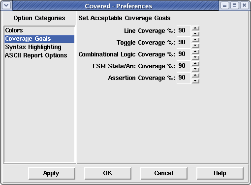

The coverage goals preference pane allows the user to change the acceptable coverage goals for each coverage metric.
Figure 1. The Coverage Goals Window
This frame contains four spinner boxes that contains values between 0 and 100. These values correspond to a coverage percentage for each coverage metric that the user deems to be "good enough". These values are used by the Summary Window to help visually identify modules/instances that are meeting or exceeding these goals and which modules are not meeting these goals. If a coverage percentage for a module/instance is less than this value, the module is colored red. If the coverage percentage is greater than or equal to this value, the module/instance is colored yellow (or green which indicates that the module/instance reached 100% coverage for a given metric).
To increase the specified percentage value, simply click on the
 to the right of the percentage until
the desired value is displayed. To decrease the specified percentage value, simply
click on the
to the right of the percentage until
the desired value is displayed. To decrease the specified percentage value, simply
click on the  to the right of the
percentage until the desired value is displayed.
to the right of the
percentage until the desired value is displayed.
Sets the coverage goal of line coverage to the specified percentage to the right. If line coverage for a given module/instance meets or exceeds this percentage value, it will be displayed yellow in the summary window.
Sets the coverage goal of toggle coverage to the specified percentage to the right. If toggle coverage for a given module/instance meets or exceeds this percentage value, it will be displayed yellow in the summary window.
Sets the coverage goal of combinational coverage to the specified percentage to the right. If combinational logic coverage for a given module/instance meets or exceeds this percentage value, it will be displayed yellow in the summary window.
Sets the coverage goal of FSM state/arc coverage to the specified percentage to the right. If FSM state/arc coverage for a given module/instance meets or exceeds this percentage value, it will be displayed yellow in the summary window.
Sets the coverage goal of assertion coverage to the specified percentage to the right. If assertion coverage for a given module/instance meets or exceeds this percentage value, it will be displayed yellow in the summary window.